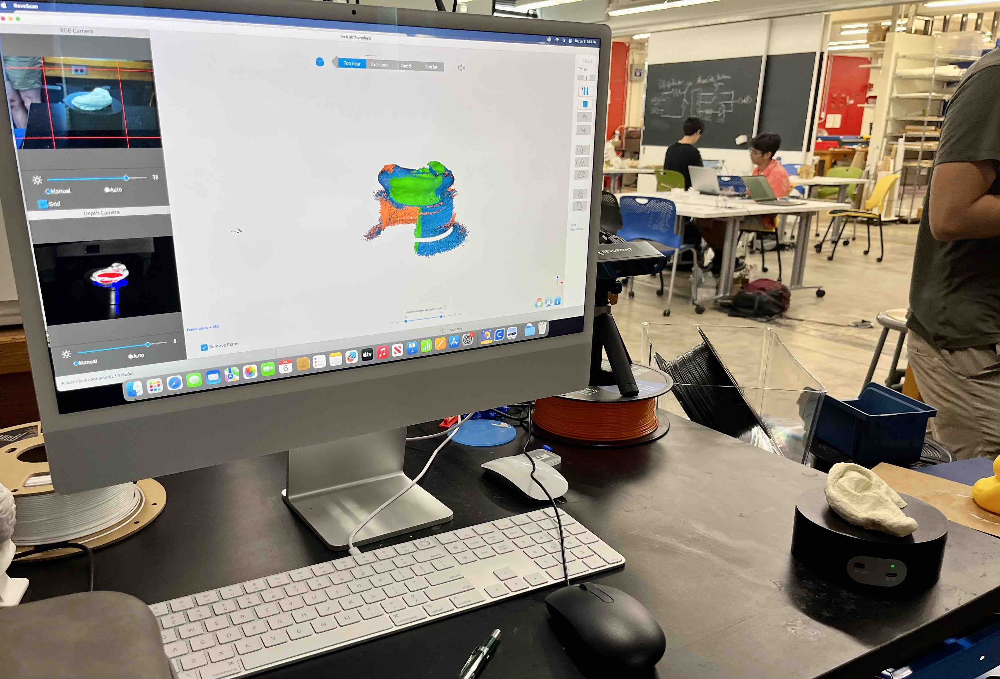
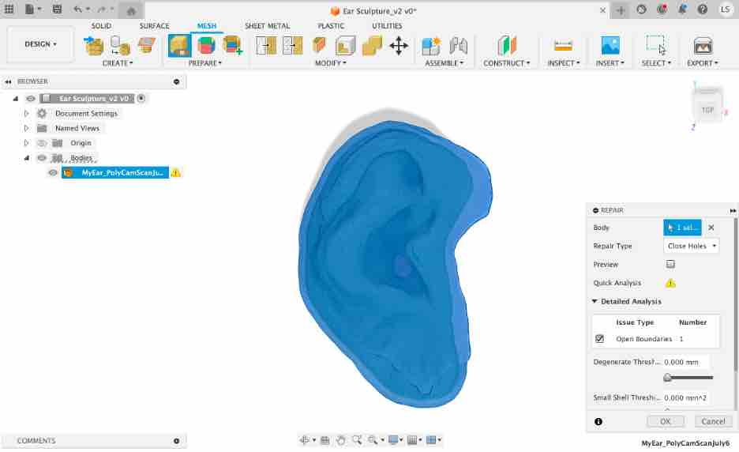
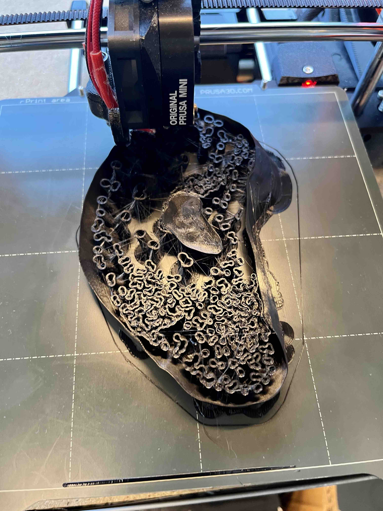

<br>
### 3D Scanning and Printing
<br>
<h4>My Ear Sculpture: 3D Scanning and Printing</h4>
Given my foray into figurative sculptures, I thought it would be interesting to model my own ear in plastiline and then 3D scan and print it. Thought it would be a nod to Van Gogh in a way.
I was also curious to see how accurately 3D scanning and printing can be in replicating an original sculpture made of something like plaster, clay or plastalina.
In the lost wax process, which is often used for the fine arts, the original sculpture is destroyed in the process of making the mold (https://en.wikipedia.org/wiki/). Could using 3D scanning allow for the creation of accurate models that allow for bronze to be cast without impacting the original sculpture an artist worked on? Companies like Form Capture are already starting to offer services such as these (https://formcapture.com/3d-scanning-art-sculpture/).
I tried three methods of 3D scanning my plastiline sculpture of my ear with varying results.
<img src="01_3D_StarkEarPhoto_Stark_July6.jpg" alt="My ear" class="photo">
<figcaption>Firstly, I needed a photo of my ear. I took one with my iPhone.</figcaption>
<img src="02_3D_PlastilineEar_Stark_July6.jpg" alt="My plastiline ear" class="photo">
<figcaption>Then, I used a piece of cardboard as my platform to build the ear.</figcaption>
<img src="03_3D_PlastilineEarSide_Stark_July6.jpg" alt="Plastiline ear from side." class="photo">
<figcaption>Here is the side view of the ear so you can see the relief. This design would be challenting to create using a subtractive method of manufacturing due to its irregular curves and surface texture.</figcaption>
I thought this ear sculpture would test out how well the 3D scan is able to capture the surface textures and also the topology of the sculpture.
For the first two 3D scans, I used the Harvard's lab Revopoint system to scan in my ear sculpture using both the turn table and a manual scan. The results were disappointing. It may be user error, but very little of me was involved in the first automated scan. In the second manual scan, I did need to move the scanner around and perhaps there is a better technique than the one I used.

<figcaption>Using the turntable to autoscan the ear with Revopoint.</figcaption>
<figcaption>The scan results. When the scan first started, it looked like it was off to a great start. However, over time, the system had trouble putting together the abstract terraine of the ear.</figcaption>
<img src="06_3D_RevopointManualScan_Stark_July6.jpg" alt="Manual scan" class="photo">
<figcaption>I then used the manual way to scan and the results were better, but still disapointing.</figcaption>
<figcaption>I brought the STL file of the auto scan into PrusaSlicer to see what it would look like. Quite abstract.</figcaption>
As a third try, I used an app called Polycam on my iPhone and did a scan of my ear sculpture. The first attempt, I missed a place on the back of the ear. However, second attempt turned out an impressive image.
<img src="07_3D_PolycamScan_Stark_July6.jpg" alt="Polycam scan of my ear sculpture." class="photo">
<figcaption>Processing the photos I took of my ear sculpture which was processed by Polycam.</figcaption>
<img src="08_3D_PolycamScanEarResults_Stark_July6.jpg" alt="My plastiline ear" class="photo">
<figcaption>3D rendered results from the Polycam app.</figcaption>
<iframe class="video" src="https://www.youtube.com/embed/pcCnA4-Dit0" title="YouTube video player" frameborder="0" allow="accelerometer; autoplay; clipboard-write; encrypted-media; gyroscope; picture-in-picture; web-share" allowfullscreen></iframe>
<figcaption>3D video of my ear.</figcaption>
<img src="09_3D_PolycamPrusa_Stark_July7.jpg" alt="Polycam san" class="photo">
<figcaption>The shape came out really well visually on the PrusaSlicer of the 3D captured ear sculpture using photogrammetry with the PolyCam app.</figcaption>
<a download href='./MyEar_PolyCamScanJuly6.stl'>Download the Polycam STL file of my Ear Sculpture.</a>
However, I was not able to print this model as the mesh did not have any depth. I had to research how to take the output from a Polycam scan into Autodesk Fusion to make the necessary edits before generating an STL file that would print.
<img src="10_3D_NottaHereIdea_Stark_July8.jpg" alt="It is notta h(ear)" class="photo">
<figcaption>During this time, I also had an idea for the 3D light and sensory sculpture using the ear, "It is notta h(ear)". It is a bit of a play on Magritte's "This is not a pipe" painting. I thought in the modern context of digital fabrication, it brings more questions of what is considered real and what is a replica. Also the way we communicate and understand each others realities.</figcaption>
<figcaption>I imported the STL file from Polycam into Fusion as a mesh</figcaption>
<img src="10_03_ScantoFusionMeshScale_Stark_July9.jpg" alt="It is notta h(ear)" class="photo">
<figcaption>I used the "Scale Mesh" function to factor the sculpture by 1000x in order to make it right size.</figcaption>
<img src="10_04_3D_ScantoFusion_CropCardboard.jpg" alt="It is notta h(ear)" class="photo">
<figcaption>Using the "Plane Cut" function, I was able to remove the cardboard backing as for the sculpture, I just wanted the ear to be printed in PLA. The rest of the sculpture will be made of wood.</figcaption>
<img src="10_05_3D_CreateShellThickness_Stark_July9.jpg" alt="It is notta h(ear)" class="photo">
<figcaption>I used the "Shell" capability to increase the thickness of the mesh so it can be printed. </figcaption>

<figcaption>"Repair" was used to enclose the back of the sculpture.</figcaption>
<figcaption>Results of the ear in Fusion for printing. Exported this to STL.</figcaption>
<a download href='./EarSculpture_Stark_July9.stl'>Download the STL ready to print version of my Ear Sculpture.</a>
<figcaption>As an aside, I also tried a different method by creating faces for the sculpture and then trying to use "Thicken" to create a shell. This used a lot of processing power and I was not able to get it to work. Maybe something others want to try or give advice on.</figcaption>
<figcaption>Imported the STL file into PrusaSlicer.</figcaption>
<figcaption>The setting were adjusted to allow for organic supports. Also had trouble exporting to gcode until supports were put everywhere. </figcaption>
<img src="10_11_3D_PrusaSlicerSlicedEarSculpture_Stark_July9.jpg" alt="It is notta h(ear)" class="photo">
<figcaption>Finally, gcode exported and ready for the printer!</figcaption>
I am not able to post the GCODE here as the file turned out to be ~160MB large and will require over 40 hours to print. Yikes!
<figcaption>Finally, printing, fingers crossed!</figcaption>
<iframe class="video" src="https://www.youtube.com/embed/GCe6CuGcfNc" title="YouTube video player" frameborder="0" allow="accelerometer; autoplay; clipboard-write; encrypted-media; gyroscope; picture-in-picture; web-share" allowfullscreen></iframe>
<figcaption>About half way through the printing...until the ear is complete!</figcaption>
<figcaption>It's complete! Wow, that was a long print.</figcaption>
<figcaption>A closer look at the printed solid clear ear.</figcaption>
<figcaption>While I had an ear printing, it was not the original shell idea I had and so I wanted to make another attempt at this. This new attempt at the "Thicken" with the body worked. I think the issue the first time was I had set the thickness to >1 mm vs the 0.2 mm and 0.35 mm in this round. </figcaption>
<img src="10_14_3D_PrusaSlicerEarShell_Stark_July10.jpg" alt="Preparing for 3D print" class="photo">
<figcaption>Created the GCODE file in PrusaSlicer. Chose organic supports everywhere.</figcaption>
<figcaption>Some of the settings used.</figcaption>
<figcaption>Starting the print of the 3D shell attempt of the ear sculpture.</figcaption>

<figcaption>Progress on a test print of ear shell in black PLA.</figcaption>
<figcaption>Some clear PLA was found for the shell design of the ear so starting a print of this. A little less than half way through. </figcaption>
<iframe class="video" src="https://www.youtube.com/embed/glGv-Szcfp4" title="YouTube video player" frameborder="0" allow="accelerometer; autoplay; clipboard-write; encrypted-media; gyroscope; picture-in-picture; web-share" allowfullscreen></iframe>
<figcaption>Almost midway through the print of the clear ear sculpture shell trial. </figcaption>
<figcaption>The solid ear completed the print and I created a cardboard prototype of the base as I had envisioned it. I think I will go back to a rectangular shape. Also, as I start to work with sensors, I'm starting to think about how to design into the base the sensory input and output components for this sculpture for distance sensing, light and audio.</figcaption>
<figcaption>The clear shell version of the ear sculpture completed printing.</figcaption>
<figcaption>I knew there were going to be a lot of organic supports, but very different seeing them in reality.</figcaption>
<figcaption>Started to process of removing supports by breaking apart carefully the large pieces. Telling myself that we will persevere.</figcaption>
<figcaption>Tried the clear shell ear prototype against the base. Need more work to smooth out the inside of the shell. Getting closer to the vision in my head....</figcaption>
<figcaption>Updated the prototype for the larger base... This project continues in the Sensors section as I add proximity detection so that if a viewer is near by, based on distance away, the sculpture will detect them and will trigger different actions which will be part of the Output section.</figcaption>
<img src="10.1_3D_ScanofClint_Stark_July8.jpg" alt="3D Scan of Clint" class="photo">
<figcaption>As an aside: I couldn't help but also take a scan of Clint. Super impressed (and a little creeped out) about how accurate and detailed the scan turned out. I could see something like this being useful, amongst other more practical applications, to be used as a model to sculpt from. Clint would never hold this still for this long.</figcaption>
<br>
<h4>3D Printing: Balloon Dog, Scissors and a Brush</h4>
Besides creating 3D models from using various 3D scanners, I also explored a few 3D prints from other workflows.
I first tried to print a 3D model from the Printables website. I selected a balloon dog, inspired and popularized by artist, Jeff Koons. You can find the 3D model here: https://www.printables.com/model/406281-balloon-dog.
I downloaded the STL file, opened it up in PrusaSlicer and printed it.
<img src="11_3D_PrintingBalloonDog_Stark_July7.jpg" alt="Printing balloon dog." class="photo">
<figcaption>Printing of a balloon dog on a Prusa 3D printer.</figcaption>
<img src="12_3D_BalloonDogfromPrinter_Stark_July7.jpg" alt="The results of the balloon dog 3D print." class="photo">
<figcaption>Balloon dog emerges from the printer. It needed the supports to ensure during the print, the head and body did not collapse.</figcaption>
<img src="13_3D_BalloonDogPrint_Stark_July7.jpg" alt="Balloon dog without supports" class="photo">
<figcaption>Used my fingers and a clipper to remove the supports. Pretty pleased with the print out! Maybe a bit of light sanding needed. My own balloon dog.</figcaption>
<figcaption>Next, I decided to print a 3D CAD drawing I created. In this case, the scissors from an earlier exploration. I started with trying to print the pair of scissors as one piece. I brought it into Prusa Slicer as an STL exported from Autodesk Fusion and turned it into gcode for the printer.</figcaption>
<figcaption>Results of my 3D print of the scissors as one piece.</figcaption>
<figcaption>Then I thought it would be cool to print the pair of scissors as 2 pieces and put them together. I tried to be efficient as 3D printing takes some time to put both pieces on the same bed. The challenge I found was that the printer kept getting stuck because when it would go to print the second piece of the scissors, the first part layer would cool too much for the next layer to stick on it well. Based on this learning, I decided to print the two parts separately. </figcaption>
<img src="17_3D_PrusaSlicerScissorsSeparate_02_Stark_July7.jpg" alt="One part of scissors." class="photo">
<figcaption>New stl file in PrusaSlicer with only one part of the pair of scissors.</figcaption>
<img src="18_3D_BrushPrusaSlicer_Stark_July7.jpg" alt="Brush import into Prusa Slicer." class="photo">
<figcaption>Next up is the brush I had modified earlier. When I imported it into PrusaSlicer, it appeared standing up. This was when I realized that designing something in CAD to be printed, one may need to consider the best way to print it. Like in the 2D world where you had to consider if your paper was in portrait or landscape mode.</figcaption>
<figcaption>I used the tools in PrusaSlicer to place it on the print bed. However, because the back of the brush has the protruding rounded handle, it didn't lie perfectly flat. I thought about how something like this would be supported. One one hand, you could have supports, but this will also make the surface texture rougher and need more time to work on after it comes out of the printer. Considerations for the design of something one wants to 3D print.</figcaption>
<img src="20_3D_PrusaSlicerBrush03_Stark_July7.jpg" alt="Orienting the brush for 3D printing." class="photo">
<figcaption>Not sure this is the optimal solution, testing it out...</figcaption>
<img src="21_3D_BrushPrinting_Stark_July6.jpg" alt="Resuls of the 3D print." class="photo">
<figcaption>In particular, I wanted to print the brush to see how or if the bristles would even print. Clearly they did not. </figcaption>
<img src="22_3D_BrushPrintTop_Stark_July6.jpg" alt="Printed brush." class="photo">
<figcaption>The handle turned out well and had a good feel to it as a "prototype".</figcaption>
<img src="23_3D_BrushPrintBottom_Stark_July6.jpg" alt="Back of brush." class="photo">
<figcaption>Back of the brush. The supports left a rough surface.</figcaption>
Overall, this experience of trying to bring 3D modeled items shows there are considerations in the design of objects if one is planning to 3D print them. The more parts of the object need to be suspended, the great the supports and challenges of being able to print it on something like a Prusa printer. Besides altering one's design, one can also use a different 3D printing method such as FormLabs that uses water to support and suspend an object as it is being printed. There are also a greater variety of materials that can be used. It is a more expensive process, but for different requirements, may be an approach that is worth it.